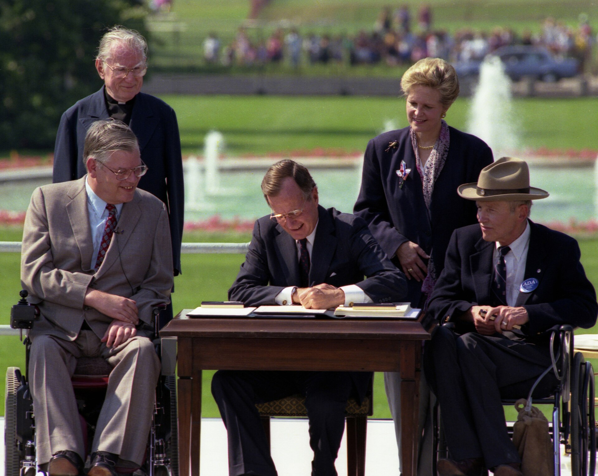

Directions: Your group has the ledger of the boom. Each station holds one record from 1990 to 1996. Work through the five stations in order, enter each record in the sorting table in Part 2, then deliver the closing verdict in Part 3.
Source: U.S. Congress, Americans with Disabilities Act of 1990, Section 2, Findings (Statutes at Large, via Congress.gov). Audited TPSP bank record, americans-with-disabilities-act-1990. Cuts are marked with ellipses.
The Congress finds that [...] (1) some 43,000,000 Americans have one or more physical or mental disabilities, and this number is increasing as the population as a whole is growing older; (2) historically, society has tended to isolate and segregate individuals with disabilities, and, despite some improvements, such forms of discrimination against individuals with disabilities continue to be a serious and pervasive social problem; (3) discrimination against individuals with disabilities persists in such critical areas as employment, housing, public accommodations, education, transportation, communication, recreation, institutionalization, health services, voting, and access to public services; [...] (8) the Nation's proper goals regarding individuals with disabilities are to assure equality of opportunity, full participation, independent living, and economic self-sufficiency for such individuals; and (9) the continuing existence of unfair and unnecessary discrimination and prejudice denies people with disabilities the opportunity to compete on an equal basis [...] and costs the United States billions of dollars in unnecessary expenses resulting from dependency and nonproductivity.

State the number Congress gives for Americans with disabilities, and name three areas of life where Congress says discrimination against them persisted.
Finding (9) makes two kinds of argument at once. State the fairness argument and the money argument in your own words.
Source: North American Free Trade Agreement, Chapter One, Article 102, Objectives (NAFTA Secretariat text; the agreement among the United States, Canada, and Mexico, signed 1992, in force January 1, 1994).
1. The objectives of this Agreement, as elaborated more specifically through its principles and rules, including national treatment, most-favored-nation treatment and transparency, are to: (a) eliminate barriers to trade in, and facilitate the cross-border movement of, goods and services between the territories of the Parties; (b) promote conditions of fair competition in the free trade area; (c) increase substantially investment opportunities in the territories of the Parties; (d) provide adequate and effective protection and enforcement of intellectual property rights in each Party's territory; (e) create effective procedures for the implementation and application of this Agreement, for its joint administration and for the resolution of disputes; and (f) establish a framework for further trilateral, regional and multilateral cooperation to expand and enhance the benefits of this Agreement.
State objective (a) and objective (c) in your own words. What exactly was this agreement built to do?
The preamble to this agreement also resolved to create new employment opportunities and improve working conditions and living standards in the three countries. Organized labor and Ross Perot opposed the agreement in 1993, warning that jobs would move south. State what each side expected, using only what this station and that sentence give you.
Source: George H. W. Bush, Address to the Nation Announcing Allied Military Action in the Persian Gulf, January 16, 1991 (Public Papers of the Presidents, George H. W. Bush, 1991, Book I, pages 42 to 45, via GovInfo). Cuts are marked with ellipses.
Just 2 hours ago, allied air forces began an attack on military targets in Iraq and Kuwait. These attacks continue as I speak. Ground forces are not engaged. This conflict started August 2d when the dictator of Iraq invaded a small and helpless neighbor. Kuwait, a member of the Arab League and a member of the United Nations, was crushed; its people, brutalized. Five months ago, Saddam Hussein started this cruel war against Kuwait. Tonight, the battle has been joined. [...] This military action, taken in accord with United Nations resolutions and with the consent of the United States Congress, follows months of constant and virtually endless diplomatic activity [...]. Now the 28 countries with forces in the Gulf area have exhausted all reasonable efforts to reach a peaceful resolution, have no choice but to drive Saddam from Kuwait by force. We will not fail.
State the two sources of authority the president names for this military action, quoting his words for each.
State how many countries the president says had forces in the Gulf area, and state the goal he sets for them in his closing lines.
Source: Data record built for this lesson from federal statistics. Manufacturing employment, Bureau of Labor Statistics. Trade as a share of the economy, Bureau of Economic Analysis. Unemployment, Bureau of Labor Statistics. Federal surplus, Congressional Budget Office. Figures are round, well established numbers, labeled with their sources on the face of this station.
| Measure | Figure | Source |
|---|---|---|
| Manufacturing employment, 1990 | about 17.3 million jobs | Bureau of Labor Statistics |
| Manufacturing employment, 2010 | about 11.5 million jobs | Bureau of Labor Statistics |
| Imports plus exports as a share of gross domestic product | about one quarter in 1990, rising toward three tenths by 2010 | Bureau of Economic Analysis |
| Unemployment rate, 2000 | 3.9 percent | Bureau of Labor Statistics |
| Federal budget balance | surplus, 1998 to 2001 | Congressional Budget Office |
Read the first two rows together. How many manufacturing jobs does the record show lost between 1990 and 2010, and during what kind of decades, boom or collapse, were they lost?
State one gain this record supports and one cost this record supports. A strong answer uses two different rows for the two claims.
Source: Labeled summary resting on the public record of the Personal Responsibility and Work Opportunity Reconciliation Act of 1996, Public Law 104-193, signed August 22, 1996, as summarized by the Congressional Research Service. The purposes quoted below are the statute's own, from Section 401 of the Social Security Act as amended by the act. The summary is labeled because this lesson summarizes the act's long text rather than quoting its operative sections at length.
Summary: The act ended Aid to Families with Dependent Children, a federal entitlement in place since 1935, and replaced it with Temporary Assistance for Needy Families, a capped block grant to the states. It required recipients to engage in work after two years of receiving benefits, placed a lifetime limit of five years on benefits paid with federal funds, strengthened child support enforcement, and restricted benefits for most noncitizens.
The statute states the purposes of the new program: (1) provide assistance to needy families so that children may be cared for in their own homes or in the homes of relatives; (2) end the dependence of needy parents on government benefits by promoting job preparation, work, and marriage; (3) prevent and reduce the incidence of out-of-wedlock pregnancies; and (4) encourage the formation and maintenance of two-parent families.
State the two hard limits the summary names, the work requirement and the lifetime limit, with their numbers.
Set purpose (1) beside the two limits. What tension inside this law does that pairing show?
Enter each station in one row. Use the documents, not your first impression, for every cell.
| Station | What the post-Cold War settlement built | Who it paid | Who it cost |
|---|---|---|---|
| 1. ADA findings | |||
| 2. NAFTA | |||
| 3. Gulf War address | |||
| 4. The data record | |||
| 5. Welfare law |
Was the peace dividend ever really paid? Answer in a short paragraph from the documents. Name where the money and attention freed by the Cold War's end actually went in these records, name who received a payment you can document, and name who paid a cost you can document. A verdict that names only gains or only costs has read half the ledger.
The number and the areas. Some 43,000,000 Americans. Any three of employment, housing, public accommodations, education, transportation, communication, recreation, institutionalization, health services, voting, and access to public services earn credit.
Two arguments in finding (9). The fairness argument is that unfair and unnecessary discrimination denies people with disabilities the opportunity to compete on an equal basis. The money argument is that the same discrimination costs the United States billions of dollars in unnecessary expenses resulting from dependency and nonproductivity. Congress argued the law as both a rights measure and an economic one.
Objectives (a) and (c). Objective (a) is to eliminate barriers to trade in, and facilitate the cross-border movement of, goods and services among the three countries. Objective (c) is to increase substantially investment opportunities in the territories of the three parties. The agreement was built to make one North American market under shared rules.
Two expectations. The agreement's makers expected, in the preamble's words, new employment opportunities and improved working conditions and living standards. Organized labor and Ross Perot expected production and jobs to move south to lower cost Mexican labor. Both expectations are stated here as their makers stated them. Grade the statement of each side, not a verdict on which side the later record favored.
Two sources of authority. United Nations resolutions and the consent of the United States Congress, in the president's words, taken in accord with United Nations resolutions and with the consent of the United States Congress.
The coalition and the goal. Twenty eight countries with forces in the Gulf area. The goal is to drive Saddam Hussein and Iraq's army from Kuwait by force, after, in the president's account, all reasonable efforts to reach a peaceful resolution had been exhausted.
The manufacturing loss. About 5.8 million jobs, from about 17.3 million in 1990 to about 11.5 million by 2010. The loss ran through the boom years of the 1990s as well as through recessions, which is why the unemployment row and the surplus row sit in the same record. The top line economy and the factory economy moved in opposite directions at the same time.
One gain and one cost. Gains supported by this record include unemployment of 3.9 percent in 2000, federal surpluses from 1998 to 2001, and trade rising toward three tenths of the economy. The cost supported is the manufacturing loss of about 5.8 million jobs across two decades. Credit any pairing drawn from two different rows.
The two limits. Recipients were required to engage in work after two years of receiving benefits, and benefits paid with federal funds carried a lifetime limit of five years. The summary is labeled on its face. The purposes quoted are the statute's own words from Section 401 as amended.
The tension. Purpose (1) promises assistance so that children may be cared for in their own homes. The two limits withdraw that assistance on a schedule whether or not a family has found work that supports a home. Supporters of the law, including President Clinton, who signed it, read the limits as the mechanism of purpose (2), ending dependence by promoting work. Critics read the same limits as a cutoff. The station teaches the pairing, not a verdict.
Full credit sorting rows name, for the ADA, a federal ban on discrimination that paid Americans with disabilities in access and opportunity and cost employers the price of accommodation within the law's limits; for NAFTA, a North American market that paid consumers, exporters, and investors and cost factory workers whose production moved; for the Gulf War address, a coalition war under United Nations and congressional authority that paid Kuwait its liberation and cost the United States the expense of the war and defense communities nothing yet, since the dividend debate followed the victory; for the data record, the figures themselves; and for the welfare law, a work based assistance system that paid taxpayers and working families on its supporters' account and cost families who reached the limits on its critics' account.
For the verdict, full credit answers trace the dividend in the documents. The strongest answers note that the records show the saving argued over rather than delivered as one payment. The surplus years of 1998 to 2001 are the closest thing to a paid dividend in this ledger, and the same record shows defense towns, factory workers, and welfare families paying costs in the same decade. Grade the use of evidence, never the side a student takes.